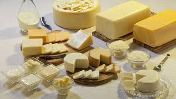
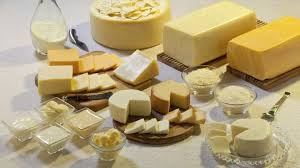

Nossos produtos derivados do leite, são de qualidade de exportação, com as melhores avaliações e todos certificados pela
Vigilância Sanitária
e
Ministério da Agricultura
 
Todo animal que vai para o frigorifico para o abate, passa por diversas etapas desde o seu nascimento até o abatimento, onde são controlado todo e qualquer tipo de vacinação, e evolução do gado.